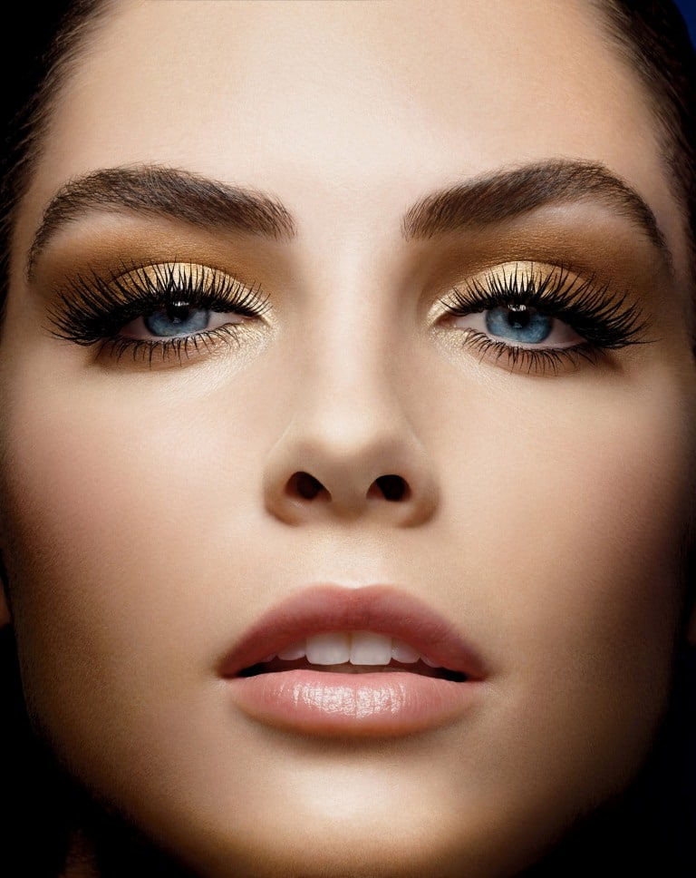

Evening Style
В особых случаях можно выделить особенности своей внешности и использовать какие-то яркие цвета.
Но все же слишком усердствовать тоже не рекомендуется. В целом, вечерний макияж можно охарактеризовать, как яркий и броский.
Его используют тогда, когда хочется выглядеть особенно красивыми.
Главное правило такого мэйка – подобрать те цвета, которые вам действительно идут, и при этом не бояться экспериментировать.
Вы вполне можете сделать свой образ чуть ярче, чем обычно. Главное – чтобы все смотрелось гармонично и сочеталось между собой.
Также важно, чтобы макияж вписывался в тематику события.

Особое внимание стоит уделять еще и освещению, особенно если вы планируете фотографироваться на этом событии.
Если освещение будет искусственным, то стоит выбрать оттенок чуть темнее, чем цвет вашей кожи. При дневном освещении нужно использовать
максимально натуральный оттенок, который лучше всего смотрится на коже.
{% endblock %}